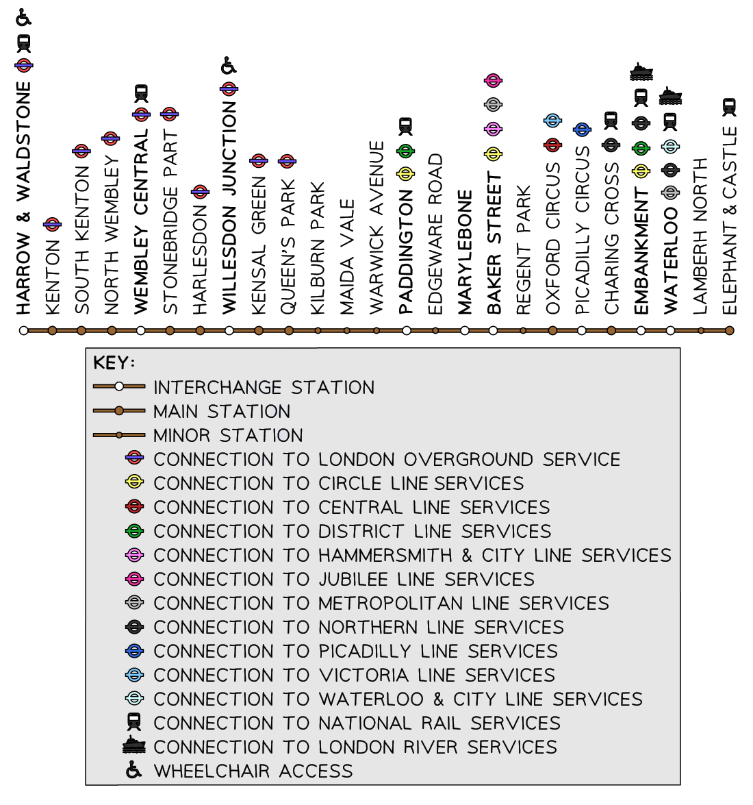
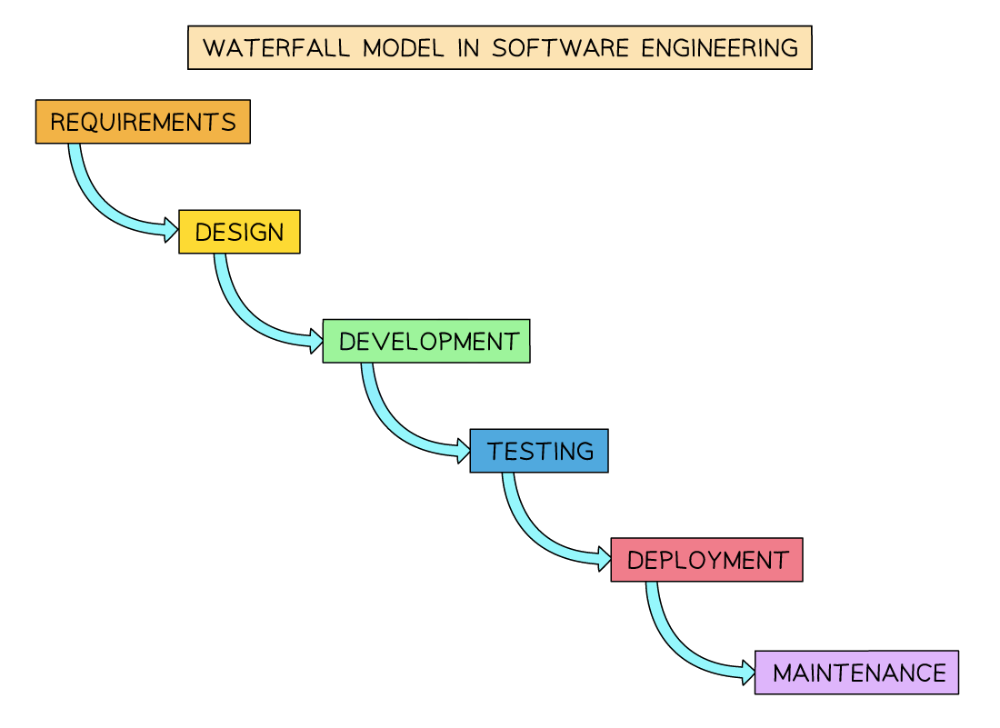
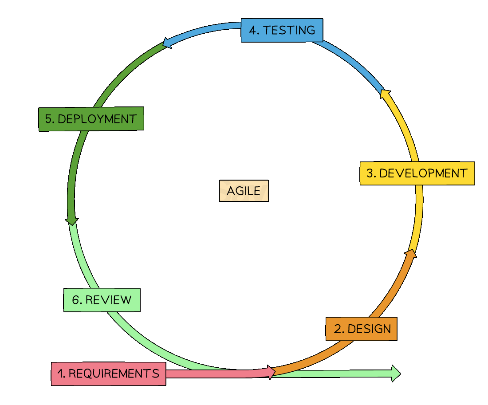
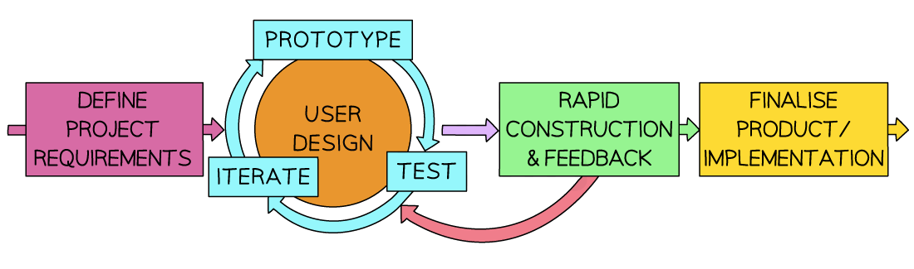

Lifecycle Stages
Lifecycle stages
What is the program development life cyle?
- The program development life cycle (PDLC) is a structured process used to design, build, and test software solutions
- It ensures that programs are developed systematically, efficiently, and to a high standard
- Each stage of the cycle has a specific purpose, and together they help developers solve real-world problems with reliable software
Analysis
- The analysis stage is all about understanding the problem the program is being created to solve
- Developers use abstraction to ignore unnecessary detail and focus only on what matters:
- What the program must do (core functionality)
- What limitations it must work within (constraints)
-
The London Underground map is a great example of abstraction, you don’t need the real geography, just a clear route from stop A to stop B

-
At this stage, a requirements document is often created. It:
- Breaks the problem into manageable parts
- Labels each requirement
- Describes what success looks like for each feature
Design
- The design stage involves planning how the program will work
- Developers create a blueprint for the solution using tools such as:
- Structure diagrams – break down the program into smaller components
- Flowcharts – show the logical flow of processes
- Pseudocode – outlines how the logic will be written in code
Coding
- In the coding stage, developers begin writing the program using a suitable programming language
- Code is written in modules that work together to solve the full problem
- Iterative testing is used – each module is tested and debugged individually as it’s created
- Modules are retested whenever changes are made, to ensure no new errors are introduced
Testing
- Once the full program is written, it is thoroughly tested using a variety of test data to ensure:
- It meets all the original requirements
- It handles valid and invalid input correctly
- It performs reliably under different conditions
- Example test data: Alphanumeric sequences used to check password input validation
Maintenance
- After the program has been delivered to the client or end users, it enters the maintenance stage
- This involves:
- Fixing bugs that weren’t discovered during testing
- Updating features to meet new requirements
- Improving performance or adapting to new systems
- There are three main types of maintenance:
- Corrective – fixing errors
- Adaptive – updating the software to run on new hardware or platforms
- Perfective – improving features based on user feedback
- Software maintenance ensures the program remains useful and reliable over time
Development Models
Waterfall
What is the waterfall model?
- The Waterfall Model is a sequential software development process divided into distinct phases
- Each phase must be completed before the next one begins
Steps
- Requirement Gathering and Analysis: All possible system requirements to be developed are captured and documented clearly
- System Design: The requirements are translated into a design. Architects and designers define the overall architecture and identify the main components
- Implementation: The actual code is written in this phase based on the design documents, turning the system design into a functional program
- Integration and Testing: All the components and modules are integrated and tested to ensure that the entire system works as expected
- Deployment: The product is released to the market or handed over to the client. It may involve installation, customization, and training
- Maintenance: Post-release, the system needs regular maintenance to fix bugs, improve performance, or add new features

The Waterfall Model in Software Engineering
Benefits and drawbacks
| Benefits | Drawbacks |
|---|---|
| Simple and linear – easy to understand and follow | Inflexible – difficult to make changes once development begins |
| Clear stages and milestones – easy to track progress | Expensive to fix late problems – issues found late are harder to resolve |
| Ideal for well-defined projects – works best when requirements are fixed | Long development cycle – each stage must be completed before moving on |
Suitability
- The Waterfall Model is most suitable for projects where requirements are well understood and unlikely to change
- It works well when high quality and compliance are essential, and there is a clear understanding of the project’s goals and constraints
Iterative (Agile)
What is the iterative model?
- The iterative model s a type of Agile software development methodology that promotes adaptability and high customer involvement
Steps
- Identify user stories and requirements
- Work closely with stakeholders to gather functional and non-functional requirements
- Requirements are often written as user stories (e.g. As a user, I want to…)
- Plan the sprint (Sprint Planning)
- Break down requirements into tasks
- Choose a set of tasks (features) for the current sprint (a short time-boxed development period, usually 1–4 weeks)
- Define the sprint goal
- Design the solution
- Decide how the selected features will be built
- Focus is on simple and adaptable design, not heavy upfront documentation
- Develop the features
- Write code for the selected tasks in the sprint
- Developers often work in pairs or small teams (e.g. pair programming)
- Test continuously
- Perform unit testing, integration testing, and acceptance testing during the sprint
- Testing is ongoing, not saved for the end
- Review progress (Sprint Review)
- Demo the working software to stakeholders
- Collect feedback and identify changes or improvements
- Reflect on process (Sprint Retrospective)
- The team reflects on what went well and what needs improving in the next sprint
- Focus is on team performance and process optimisation
- Release (may happen after every sprint or set of sprints)
- Deploy working software to users or staging environment
- Repeat
- Move to the next sprint with updated priorities and feedback

- Move to the next sprint with updated priorities and feedback
Benefits and drawbacks
| Benefits | Drawbacks |
|---|---|
| Highly adaptable – responds quickly to changing requirements | Requires experienced team members – may be hard to manage without expertise |
| Frequent communication – promotes constant collaboration | Risk of burnout – intense collaboration can tire the team |
| Focus on quality – encourages good design and continuous testing | May lack documentation – flexibility can reduce written records |
| Customer collaboration – ensures the product meets real needs | Scope creep – changing goals may lead to uncontrolled growth |
Suitability
- The iterative model is most suitable for small to medium-sized projects where requirements can change and customer involvement is high
Rapid Application Development (RAD)
What is RAD?
- Rapid Application Development (RAD) is a software development methodology that emphasises fast and iterative development
Steps
- Requirement planning: Gather general system requirements, define constraints and assumptions
- User design and prototyping: Collaborate with users to develop prototypes, ensuring alignment with user needs
- Construction or iterative development: Build the system incrementally, with continuous user feedback and adaptation
- Cutover or deployment: Transition the product into the live environment, including user training, support, and documentation
- Maintenance and updates: Continue to adapt and improve the system based on user feedback and needs

Rapid Application Development (RAD) Model of Software Development
Benefits and drawbacks
| Benefits | Drawbacks |
|---|---|
| Speed – fast development and delivery at relatively low cost | Requires strong team collaboration – skilled and cohesive teams are essential |
| User involvement – client feedback shapes the system throughout | Potential quality issues – speed may reduce testing and documentation |
| Flexibility – adapts quickly to changing requirements | Not ideal for small projects – may be too complex for simple systems |
| Incremental development – builds in small, testable parts | Scope creep risk – flexibility can lead to ever-expanding requirements |
Suitability
- Rapid Application Development is most suitable for projects where rapid delivery is required and where requirements can be developed and refined on the go